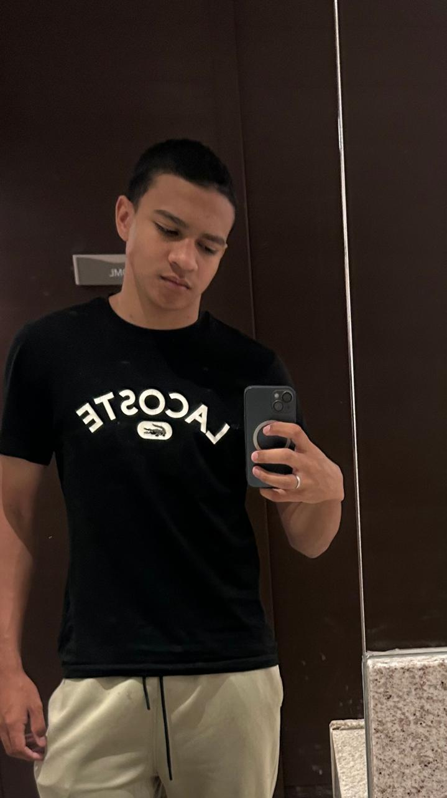

Conversa
Entendo seu negócio e o que você precisa.
Sou Maurício Fernando e estou construindo minha trajetória no desenvolvimento web, transformando meus estudos em projetos práticos e buscando novas formas de unir tecnologia, design e criatividade.

Sou Maurício Fernando e estou desenvolvendo minhas habilidades em programação e criação de sites. Gosto de transformar ideias em páginas organizadas, acessíveis e fáceis de utilizar.
Meu foco é ajudar negócios a apresentarem seus serviços na internet por meio de sites responsivos, com informações claras e caminhos simples para entrar em contato.
Cada projeto também é uma oportunidade de aprender, aperfeiçoar meu trabalho e entregar uma experiência cada vez melhor.
Entendo seu negócio e o que você precisa.
Defino a estrutura e o visual da página.
Construo o site responsivo, do celular ao computador.
Publico o site e ajusto o que for preciso.
Conheça alguns dos projetos que fazem parte da minha trajetória no desenvolvimento web.
Projeto de landing page para um negócio do segmento de tintas. Apresente aqui as funcionalidades efetivamente desenvolvidas, as tecnologias utilizadas e os resultados que você consegue demonstrar.
Visitar projetoProjeto web disponível na Vercel. Explore a página para conhecer sua estrutura e substitua esta descrição pelo objetivo e pelas funcionalidades reais do projeto.
Visitar projetoSoluções web para apresentar sua empresa, divulgar serviços e facilitar o contato com seus clientes.
Páginas focadas em apresentar um serviço, produto ou campanha de maneira clara e atrativa.
Páginas para apresentar a empresa, seus diferenciais, serviços e informações de contato.
Links de atendimento que permitem iniciar uma conversa com poucos cliques.
Layouts pensados para se adaptar a diferentes telas, de celulares a computadores.
Ferramentas que utilizo nos meus estudos e projetos.
Estruturação de páginas e organização semântica do conteúdo.
Estilização, organização visual e layouts responsivos.
Lógica de programação e interatividade nas páginas web.